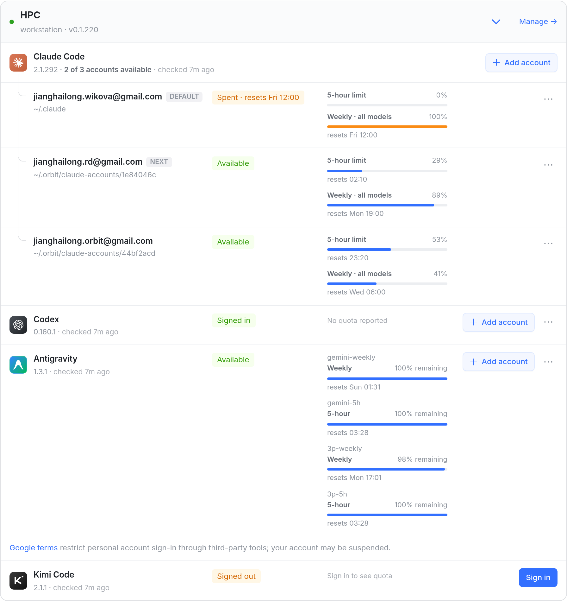
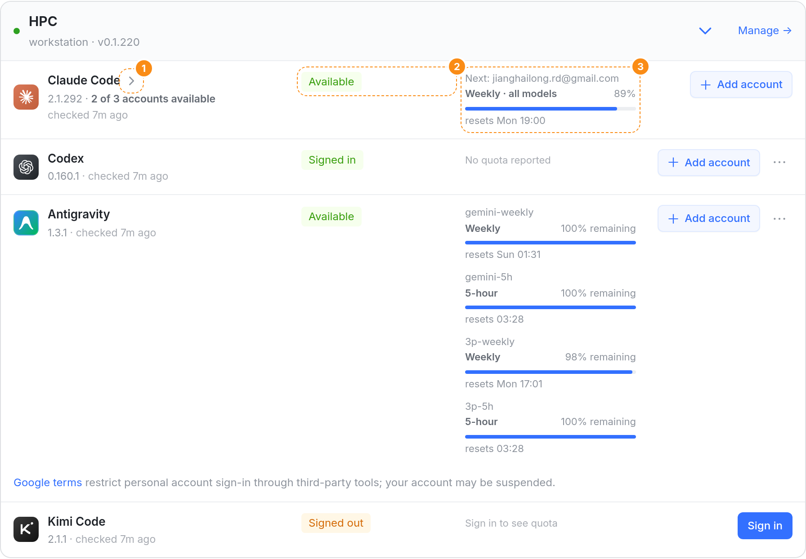
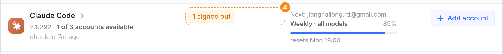
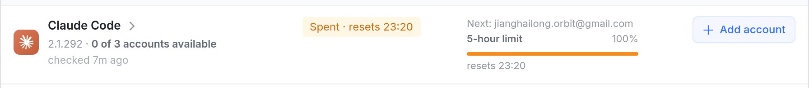
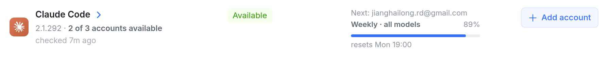
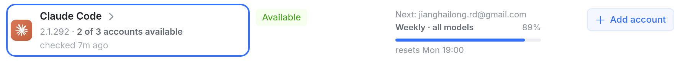
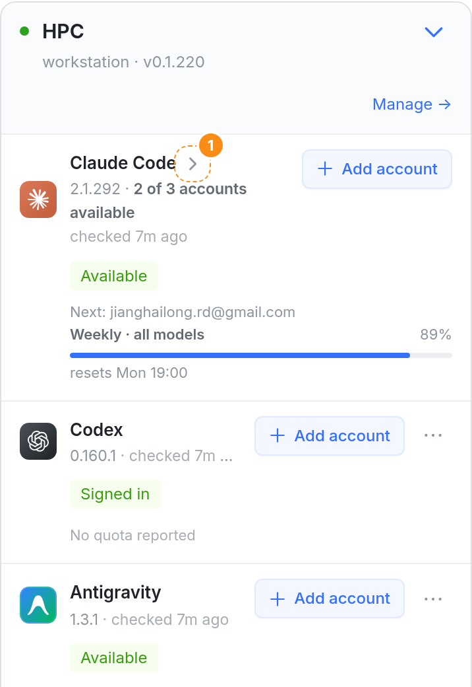
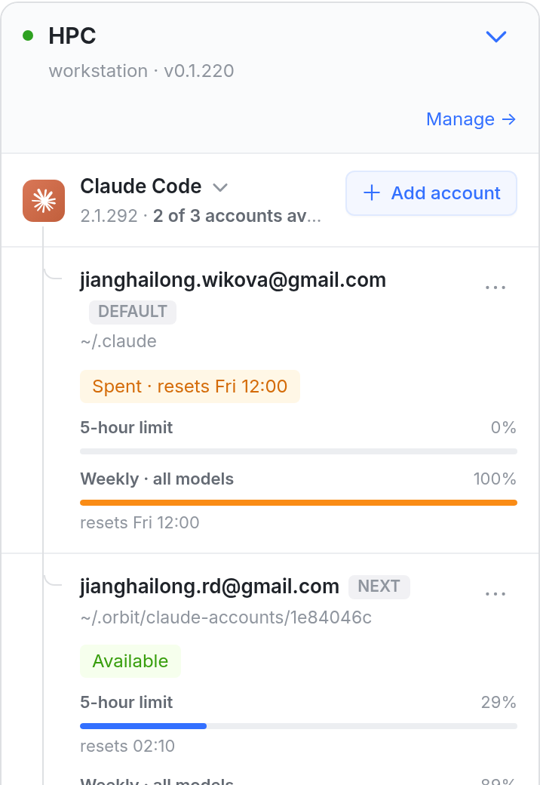

同一个引擎在一台机器上登录了两个以上账号时，Providers 页「On your runners」里每个账号占一整行，每行两到四条额度——HPC 的 Claude Code 有 3 个账号，一组就占了大半张卡。这张图让这一组能收起：点引擎名那一块，账号行收起，引擎这一行改为写新会话会用的那个账号（NEXT）和它最紧的一条额度，和运行器页、iOS 运行器页、Account pools 卡头是同一句话。截图来自真实 web 控制台（vite dev，本分支，模拟数据照 HPC 的截图造，2026-10-07 22:40 Asia/Shanghai）；箭头、收起后的状态和额度、编号框是用页面自己的样式注入的。

3 个账号各两条额度，Claude Code 一组占了整张卡的将近一半（415 / 948px）；要看下面的 Codex、Antigravity、Kimi，得先滚过它。卡片本身能收起（右上 ⌄），但那是整台机器一起收。

1点「Claude Code ›」那一块收起：图标、名字、版本行都能点，键盘 Tab 到它按 Enter / Space。「Add account」还是独立按钮，不在这块里。2状态列：NEXT 账号自己的状态（这里是 Available）。3额度列：「Next: 账号」加这个账号最接近上限的一条（周额度 89%）。于是这一行和下面 Codex、Antigravity 一样四列对齐；版本行换行，「checked 7m ago」另起一行，不截断。
1展开时箭头转成 ⌄。账号行和现在一模一样，引擎这一行也回到现在的样子——账号行里已经标了 NEXT，不再重复 Next 那一条。

4有账号要重新登录时，状态列改成橙色「1 signed out」，优先于 NEXT 的状态——收起不会把需要你处理的事藏起来。Next 照样从还登录着的账号里选（rd）。展开后那个账号的行照旧有 Sign in。

Next 是最早恢复的那个（orbit，23:20），状态「Spent · resets 23:20」，挂它用完的那条，橙色。和运行器页、iOS 的同一情况（antigravity-accounts/07 图 b）一致。


悬停时箭头变蓝，和卡片标题的箭头一样；键盘焦点框住整块身份区（图标、名字、版本行）。按钮带 aria-expanded，读屏读「Claude Code, collapsed / expanded」。


1手机上收起后，引擎行和单账号行一样分三行：名字和 Add account、状态、Next 加一条额度。默认收起（见下表「默认」）。
| 项 | 做法 | 依据 |
|---|---|---|
| 哪些行能收起 | 有两个以上账号的引擎——现在写「N of M accounts available」的那一行（Claude Code、Codex、Antigravity 都可能）。单账号的行不变。 | 只有多账号才有一组行可收 |
| 怎么切换 | 点引擎图标 / 名字 / 版本行，或名字后的箭头；Tab + Enter / Space。 | 同运行器卡片标题：整块是一个按钮，旁边的链接独立 |
| 收起时写什么 | 版本 · N of M accounts available（不变）；状态 = NEXT 账号的状态；额度 = Next: 账号 + 它最紧的一条。有账号掉线 → 橙色「N signed out」。都没登录 → Signed out / Sign in to see quota（登录是每个账号自己的，要先展开）。 | 运行器页、iOS 运行器页的多账号行（antigravity-accounts/07）；Account pools 卡头的「Next: …」 |
| 默认 | 一律收起（电脑、手机都是）；打开过的记住，按「机器 + 引擎」存在这个浏览器里（orbit:providers-open-accounts）。 | 同运行器卡片：默认收起，记住打开的那些（2026-10-07 定） |
| 自动展开 | 从新建会话里的「Not signed in」、或运行器页的引擎行（都是 ?runner=…&engine=…）进来时，展开那一组；在收起的组上点「Add account」时展开，好让新账号那一行出现。展开会被记住。 | 同运行器卡片：深链进来会展开那张卡并记住 |
| 正在登录的账号 | 收起只是不显示那几行，机器上的登录照常进行；再展开时登录面板还在。 | 同收起整张运行器卡片 |
EngineRow：多账号时 .re-id 换成 button（aria-expanded），名字后加箭头；收起时画 NEXT 账号的状态和一条额度（accountToStartOn、bindingPlanUsageRow、statusOf 现成）。RunnerEngineCard：收起的组不画 AccountRow，读写 orbit:providers-open-accounts。RunnerEngines：深链展开那一组。.re-grp-toggle、.re-grp-chev、.re-grp.folded（收起时用普通行的四列）。RunnerEngines.*.test.tsx：收起 / 展开、记住、深链展开、Add account 展开、掉线时「1 signed out」、全用完时的 Next。